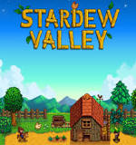

Video Games
Farming and Life Simulator, RPG, Indie
Inspired by games like Harvest Moon and Story of Seasons, Stardew Valley is a farming simulator that can be endless if the player so wishes. The game features various forms of entertainment, from combat with monsters to farming crops and animals. You also have character creation and various styles of farms to choose from. You also have the ability to chose from various types of dogs and cats as a pet.
The graphics are 2D pixelated. The gameplay is pretty simple but can get tricky when you are battling a hoard of monsters in the mines of the game. Despite being endless, things open up over the various in-game years. This creates a reason to continue playing and exploring the game. The game is also multiplayer with you and your friends either gaining money together or seperately.
 Casual, Indie, RPG, Strategy, Board Game Simulator
Casual, Indie, RPG, Strategy, Board Game Simulator
As a great way to play with friends all over the world, Tabletop simulator has endless possibilities. Thanks to the many users that play the game, there are endless board games and card games that are available to play.
The graphics for Tabletop Simulator are 3D with various ways things look. This is largely due to the fanbase creating most of the graphics. A lot of the games are also scripted which allows for easier play and less headache ensuring ease of use.
Games that I play with my friends.
 Indie, RPG, Bullet, Psychological Horror
Indie, RPG, Bullet, Psychological Horror
Inspired by Earthbound, Undertale is a multi-storyline game that has multiple storylines based on the choices you make. The game has a lot of humorous moments alongside some moments that either cause you to really think, or can be horrific if too much thought is put into it. Some choices can also carry over to the next playthrough.
Undertale is a 2D pixelated game that has really simple controls but can be difficult due to the style of combat. While the game can seem endless due to the multi-storyline design, in truth, this does not read as a non-ending game. The gameplay gets tiresome after awhile and the jokes get old.